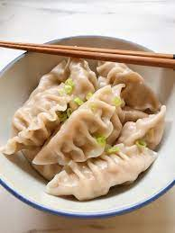

dumplings met kip

Ingrediënten
- 30 gyoza vellen (ontdooid)
- 150g kipgehakt
- 1 ui
- 2 teentjes knoflook
- halve Chinese kool
- snufje chilipeper
- snufje peper
- 2el sojasaus/sweet chili saus
- 1el gembersiroop
- olie
Bereiding
- Snijd de Chinese kool, ui en knoflook fijn. Giet een scheutje olie in een pan en bak de ui en knoflook. Voeg na 2 minuten het kipgehakt toe en bak dit rul.
- Daarna kan de Chinese kool, chilipeper en een snufje zwarte peper erbij. Bak dit een paar minuten en voeg dan de sojasaus en gembersiroop toe.
- Zet na 2 minuten het vuur uit. Schep een eetlepel van het kipgehakt op een dumpling vel, in het midden.
- Maak de rand nat en vouw het dumpling vel dubbel.Maak met je handen ongeveer 6 kleine vouwtjes.
- Zorg ervoor dat de randjes goed dicht geplakt zijn.Gebruik eventueel een beetje extra water.Maak op deze manier de rest van de dumplings.
- Giet een scheutje olie in een hapjespan. Als de olie warm is leg je een stuk of 6 dumplings in de pan. Bak ze aan 1 kant goudbruin in circa 5 minuten.
- Voeg dan een scheut (circa 60 ml) water toe. Zet de deksel op de pan en bak de dumplings ongeveer 10 minuten totdat het water is verdampt. Serveer de dumplings bijvoorbeeld met sojasaus of sweet chili saus.